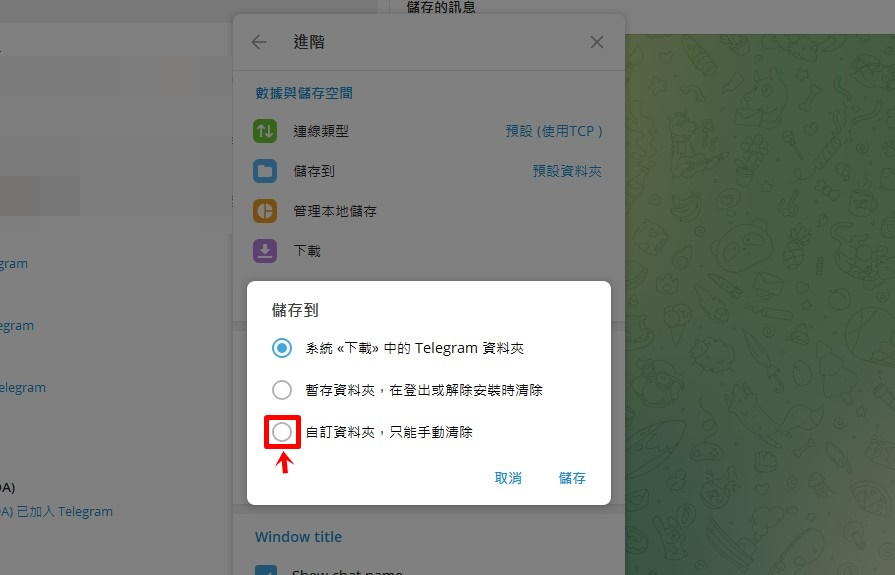

Telegram怎么多选转发？
在Telegram中多选转发消息，可以按住一条消息，然后点击顶部的“选择”按钮（或直接长按消息）。接着，选择其他想要转发的消息，点击右下角的转发图标（箭头图标）。最后，选择接收者或群组，点击发送即可。这样可以同时转发多条消息。

Telegram多选转发功能的基本使用
如何在手机上进行多选转发
- 长按消息开始选择：在手机Telegram应用中，长按一条消息，之后会出现一个“选择”模式，允许你选择其他要转发的消息。你可以根据需要选中多条消息。
- 选择多条消息：在“选择”模式下，点击其他消息来多选。选中的消息会被高亮显示，你可以选择多个聊天记录或不同聊天中的消息进行转发。
- 点击转发按钮：完成选择后，点击屏幕右下角的转发图标（一个箭头图标），然后选择你要转发的目标联系人或群组，点击发送即可。
多选转发在桌面版Telegram中的操作
- 使用Ctrl键或Shift键选择：在桌面版Telegram中，点击并按住Ctrl键（或Shift键）来多选消息。每次点击消息时，都会选中或取消选中该消息，允许选择多个消息进行转发。
- 右键菜单中的转发选项：选择好消息后，右键点击其中一条消息，在弹出的菜单中选择“转发”选项。你可以通过这个方式快速将选中的消息转发到其他聊天或群组。
- 使用快捷键加速操作：在桌面版Telegram中，选中消息后按下快捷键（如Ctrl + F）可快速进入转发模式，节省时间，提高操作效率。
Telegram转发消息的多种方式
单条消息转发与多条消息转发的区别
- 单条消息转发：单条消息转发非常简单，只需长按一条消息或点击消息旁的转发图标，选择接收者即可。这适用于快速分享一条信息给朋友或群组。
- 多条消息转发：多条消息转发则需要你先进入“选择模式”，选中多条消息后统一转发。这适合在需要批量分享多个消息时使用，节省逐条转发的时间。
- 功能差异：单条消息转发更为直接，不涉及多次选择，而多条消息转发则能够一次性分享多个消息，适用于批量信息分享或处理大量信息时。
如何在群组中批量转发消息
- 进入群组选择消息：在群组内，你可以长按一条消息进入选择模式。接着，选择其他要转发的消息，群组内的消息将高亮显示，方便多选。
- 利用选择模式批量转发：选择所有要转发的消息后，点击右下角的转发按钮，选择接收者。如果是转发到另一个群组或个人，可以在联系人或群组列表中选择目标。
- 避免重复转发：当在群组中批量转发时，务必检查所选消息，避免重复转发相同内容。如果是多个群组或联系人，检查选择的目标，以免误发送。
使用Telegram转发消息时的隐私设置
如何关闭转发消息的来源信息
- 进入Telegram设置：打开Telegram应用，进入“设置” > “隐私与安全” > “转发消息”选项。在这里，你可以选择是否显示转发的来源信息。
- 选择隐藏来源：启用“隐藏转发来源”选项后，转发的消息将不再显示原始发件人的用户名和头像，这样就能保护转发时的隐私。
- 适用场景：关闭来源信息适用于那些希望转发消息而不想暴露原始发送者身份的情况，特别是在分享敏感内容时尤为重要。
转发时如何避免暴露敏感数据
- 审查消息内容：在转发前，仔细审查消息内容，避免误转发包含个人信息、联系方式或敏感数据的内容。你可以在转发前编辑或删除敏感部分。
- 使用编辑功能：Telegram允许用户在转发前对消息进行编辑。你可以直接编辑转发的文本，删除不必要的内容或修改可能暴露隐私的数据。
- 避免转发带有链接或媒体文件：有些链接或媒体文件可能包含用户的个人信息或会导致隐私泄露。在转发时，最好避免带有链接或位置数据的媒体文件，或提前将其删除。

多选转发与聊天记录管理的关系
如何查看和删除转发历史
- 查看转发历史：Telegram本身并没有直接显示所有转发历史的功能，但你可以通过点击某条已转发的消息，查看其来源和接收者。如果消息是通过多选转发功能批量发送的，可以查看消息的详细信息。
- 使用聊天搜索功能：在聊天窗口内使用搜索框，输入特定的关键词、标签或时间，查找转发的消息。这可以帮助你快速定位已转发的消息并进行管理。
- 删除转发消息：要删除转发的消息，你可以直接长按消息并选择“删除”选项。如果你删除的是自己发送的转发内容，原消息发件人和其他收件人也不会看到删除操作，但这只影响你的一方聊天记录。
转发消息对聊天记录的影响
- 增加聊天记录的冗余：批量转发消息可能会导致聊天记录变得冗余，尤其是在群组中。过多的转发消息会占用存储空间，并影响日后查找其他重要信息的效率。
- 转发的消息带有时间戳：每条转发的消息都会保留原始的时间戳和发送者信息，虽然你可以选择不显示这些信息，但它依然会在消息记录中占据一部分位置，增加历史记录的复杂性。
- 影响消息的可读性：频繁的消息转发可能会导致聊天记录显得杂乱无章，尤其是当大量转发的内容没有清晰的分隔线时。为了提高可读性，可以考虑定期清理或归档一些不重要的转发内容。
如何在手机上进行多选转发？
在Telegram手机应用中，长按一条消息进入选择模式后，你可以点击其他消息来多选。完成选择后，点击右下角的转发按钮，选择接收者或群组，即可一次性转发多条消息。
多选转发功能是否支持在群组中使用？
是的，Telegram的多选转发功能不仅支持在个人聊天中使用，也可以在群组或频道中进行。你只需在群组内长按一条消息，选择其他要转发的消息，点击转发按钮即可。
多选转发后的消息能否修改或编辑？
可以。在多选转发消息后，你可以编辑文本内容。虽然无法修改媒体文件本身，但可以修改转发的文字部分，或者删除敏感信息后再进行发送。
其他新闻

电报如何设置阅后即焚？
在Telegram中，阅后即焚功能仅适用于秘密聊天，并且只能在两个人之间启用。设置步骤如下：打开与联系人或群组 […]
2024 年 09 月 11 日

电报群如何分组？
电报群组可以通过设置不同的群组类型进行分组。你可以创建公开群组（任何人都可以加入）或私密群组（只有邀请成员可以 […]
2024 年 10 月 10 日

电报群怎么设置下载路径？
在电报中，打开“设置”→“数据与存储”→“下载路径”。然后点击“存储路径”并选择你希望存储文件的文件夹。完成后 […]
2024 年 10 月 16 日
telegram x是什么？
Telegram X 是Telegram的官方客户端应用，提供比标准Telegram更快速、更流畅的用户体验。 […]
2025 年 04 月 13 日